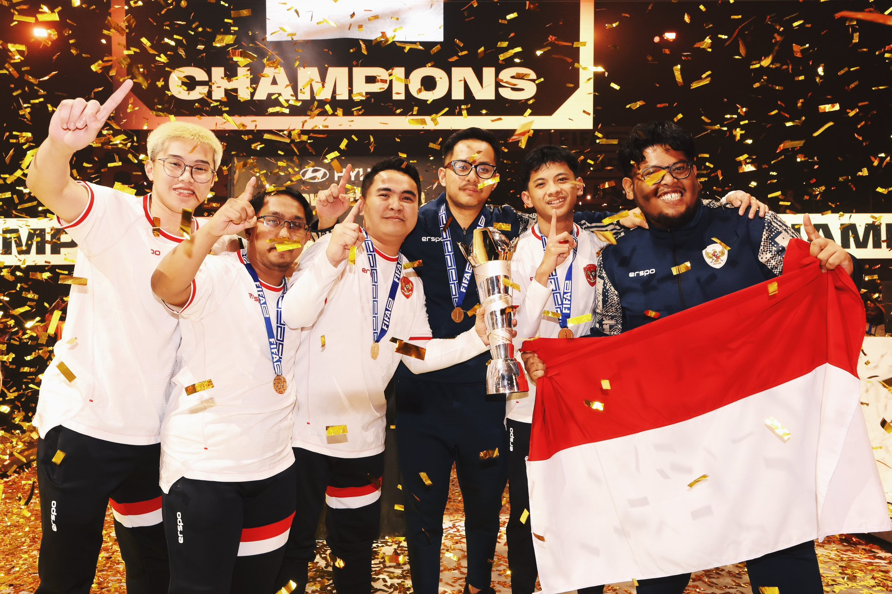

JUARAAAA!!!!!! Indonesia berhasil memenangkan FIFAe World Cup of eFootball 2024
Timnas eFootball Indonesia sukses menyabet gelar juara dunia FIFAe World Cup 2024 kategori konsol. Dalam turnamen bergengsi yang digelar di Riyadh, Arab Saudi, tim Indonesia berhasil mengalahkan Brasil...
Baca Selengkapnya